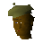

Bonzo

| Config name | bonzo |
| NPC id | 225 |
| Combat level | hidden |
| Options | Talk-to |
| Wander range | 5 tiles from spawn |
| Area folder | area_seers |
| Defined in | scripts/areas/area_seers/configs/hemenster/hemenster.npc |
Bonzo
The Fishing Contest Judge.
Show all 1 spawn on the world map → Open in knowledge graph →
Locations
| Area | Coordinates | Level | Count | Map |
|---|---|---|---|---|
| Hemenster | 2641, 3439 | 0 | 1 | view |
Dialogue
PlayerI'll enter the competition please.
BonzoOk, nearly everyone is in their place already. You fish in the spot by the willow tree, and the Sinister Stranger, you fish by the pipes.
Your fishing competition spot is beside the willow tree.
BonzoRoll up, roll up!
BonzoEnter the great Hemenster fishing competition!
BonzoOnly 5gp entrance fee!
PlayerI'll enter the competition please.
BonzoMarvelous!
PlayerI don't have the 5gp though...
BonzoNo pay, no play.
BonzoOk, we've got all the fishermen! It's time to roll!
PlayerNo thanks, I'll just watch the fun.
BonzoSo how are you doing so far?
PlayerI think I might still be able to find a bigger fish.
PlayerI caught some fish! Here...
You hand over your catch.
BonzoWe have a new winner! The heroic-looking person who was fishing by the pipes has caught the biggest carp I've seen since Grandpa Jack used to compete!
BonzoAnd the winner is... The stranger in black!
BonzoHello champ!
PlayerI don't feel like a champ...
BonzoWhy not champ?
PlayerI lost my fishing trophy...
BonzoIs that all chump? Don't worry, I have a spare!
BonzoSo any hints on how to fish?
PlayerI think I'll keep them to myself.
Quests
Referenced in scripts
scripts/areas/area_seers/scripts/hemenster/bonzo.rs2scripts/quests/quest_fishingcompo/scripts/hemenster_fishing.rs2scripts/quests/quest_fishingcompo/scripts/quest_fishingcompo.rs2